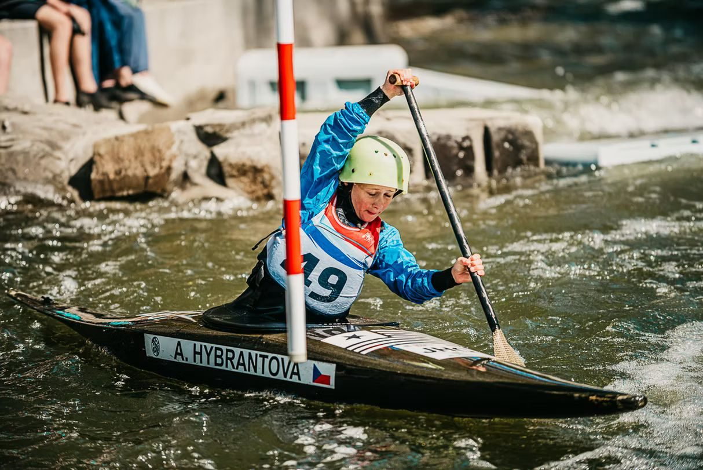

Poslední dubnový víkend (25. a 26. dubna 2026) se pozornost mladých vodních slalomářů přesunula na severní Moravu. Umělá slalomová dráha v Opavě hostila 1. a 2. závod Českého poháru žáků. Pro kategorie starších (ZS) a mladších žáků (ZM) šlo o první vrchol sezóny a důležité měření sil na celorepublikové úrovni. Výprava z SKVS České Budějovice (SKVSČB) byla u toho a naši mladí závodníci na trati zanechali velmi výraznou stopu!
O největší radost víkendu se pro budějovické barvy postaral v kategorii singlkanoistů (C1M) starší žák Ondřej Sebastian Pinkava. V sobotním 1. závodě potvrdil skvělou formu, kterou ladil přes zimu, a v kategorii starších žáků (ZS) vybojoval vynikající 3. místo. I když v neděli po trati bohužel nasbíral trestné dotyky, které ho posunuly na konečné 5. místo ve své kategorii, sobotním pódiem jasně ukázal, že letos patří k užší republikové špičce.
Mezi nejmladšími děvčaty hájila barvy klubu Anna Toncarová. V kategorii mladších žaček (ZM) na kajaku obsadila v sobotu 7. místo a v nedělním druhém závodě si o příčku pohoršila na konečné 8. místo. V této věkové kategorii je však každá projetá branka a zkušenost z těžké vody nesmírně cenná.
Sběr zkušeností a boj s vlnami
Pro mnoho našich žáků jsou podobné celorepublikové poháry především zkouškou odvahy a zkušeností. Na start se postavila řada budějovických lodí:
- Daniel Drahokoupil (ZS): Závodil na K1 i C1. Na kajaku si v sobotu připsal 18. místo a v neděli skončil na 16. příčce. V nabitém startovním poli, kde bojují desítky závodníků, jde o solidní střed pole. Na singlu se umístil na 16. místě po oba dny.
- Vojtěch Bican (ZS): Také on bojoval na dvou tratích. Jeho nejlepším výsledkem bylo víkendové maximum v podobě 32. místa v sobotu na C1. Na kajaku obsadil 39. místo v sobotu a 43. místo v neděli.
- Štěpán Šitra (ZS): Startoval v K1 a v C1. Na kajaku vybojoval 21. místo v sobotu a 28. místo v neděli. Na C1 dojel v sobotu 21. a v neděli si polepšil na 20. místo.
- Antonin Vraj (ZS): Zúčastnil se závodů v K1 a v C1. Na kajaku skončil v sobotu na 40. místě a v neděli na 47. místě. Na C1 získal 35. a 36. místo.
- Pavel Štindl (ZS): Bojoval v kategorii K1, ale po sobotním 56. místě nedělní závod nedokončil.
- Ondřej Černý (ZM): Tento mladý závodník se rval s opavskými válci a na K1 obsadil 17. místo v sobotu a 24. místo v neděli. Získal také 18. a 20. místo na C1.
- Vincent Paulát (ZM): Zapsal si 21. místo (sobota) a 23. místo (neděle) na C1. V K1 pak dojel na 22. a 28. místě.
Díky nasazení a odhodlání všech těchto malých vodáků je vidět, že v Budějovicích vyrůstá další generace nadějí, o kterých na divoké vodě v budoucnu jistě ještě hodně uslyšíme.
Přesná muška díky budějovické podpoře
Na závěr nesmíme opomenout jednu zajímavost ze zákulisí. Aby byly výsledky naprosto přesné a spravedlivé, o elektronické měření časů a zpracování výsledků se na celém opavském závodě staral zkušený budějovický tým ve složení Jakub Bican a Martin Toncar. I díky jejich profesionální práci proběhly první dva žákovské poháry naprosto hladce.
Děkujeme za podporu!
Závěrem bychom chtěli vyjádřit obrovské poděkování Jihočeskému kraji a statutárnímu městu České Budějovice. Rozvoj naší mládeže, zajištění kvalitního tréninkového zázemí i cesty našich nejmenších nadějí na celorepublikové závody až do daleké Opavy by bez jejich dlouhodobé a štědré podpory zkrátka nebyly možné. Děkujeme, že nám pomáháte vychovávat budoucí šampiony na divoké vodě!

